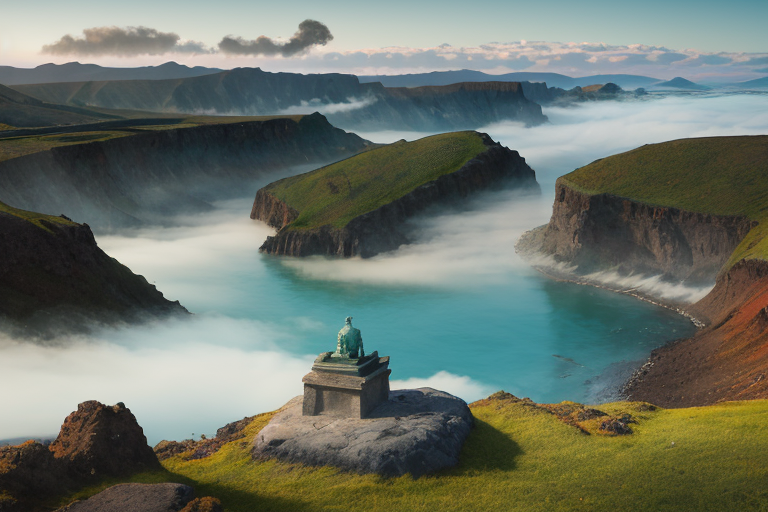
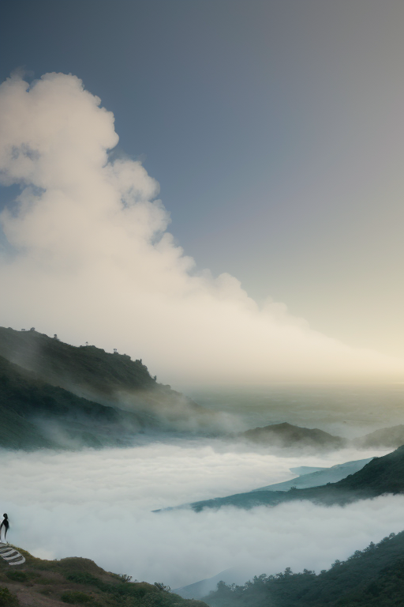
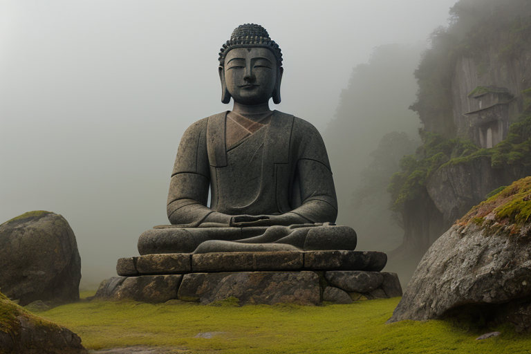
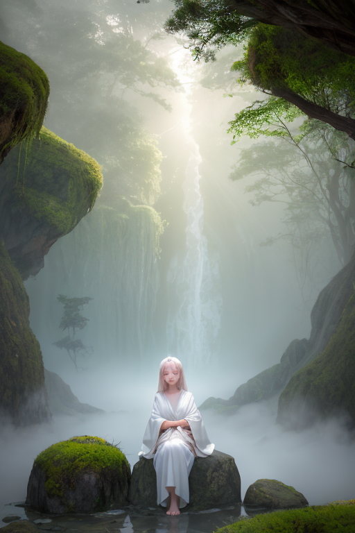
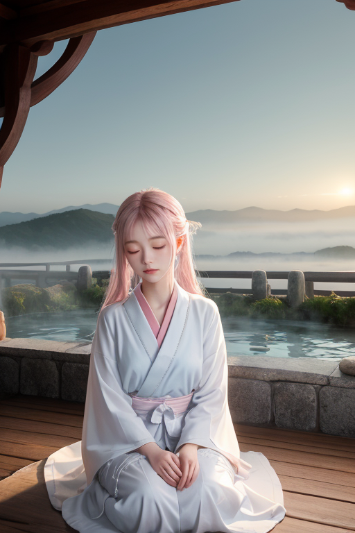

第一章 現実の大分
あなたはまだ気づいていない。この土地にも、王がいることを。
国東半島の先端、両子寺からの眺めは、山と海の境界を曖昧にする。左手にはくじゅう連山の稜線がうねり、右手には周防灘の青が広がる。ここは山海境、内と外の狭間だ。港町・臼杵には、潮風にさらされた石仏群が静かに佇む。南蛮文化が流入したかつての港は、今は穏やかな時間が流れる。しかし地図には描かれない歪みが、この地の下では絶えず蠢いている。豊後水道に沈むプレートの端、阿蘇の巨大カルデラの延長。大分は、静かな温泉郷のイメージの裏で、常に地殻の緊張に晒されている。
湯けむりは、その緊張から逃れるためのものではない。現実を覆い隠す霞でもない。むしろ、現実である地熱の、表れなのだ。

第二章 歪みの兆候
くじゅう連山の裾野、牧場の向こうに湯煙が立つ。その源泉は、深い地熱と、沈み込むフィリピン海プレートが生み出す歪みそのものだった。オオイタリア・ミストは、湯けむりの向こう側で、絶え間ない地殻の軋みを聴いていた。安堵の感情は、この軋みを和らげるための、微かな潤滑油のようなものだ。
歪みは、時に外部からも訪れる。豊後水道を伝い、南から押し寄せる異なるプレートの圧力。かつて南蛮船がもたらした文化の波のように、それは境界を揺さぶる。ミストは湯船に浸かりながら、その圧力の行方を追う。逃げることはできない。プレートは動き続ける。彼の仕事は、その衝突の衝撃を、ほんの少し、受け流す角度を変えることだ。
ユフリアが温泉の水位の微妙な変動を報告する。それは、目に見えない歪みが、確かにこの土地の「湯」という形で現れている証だった。癒しの湯は、現実の歪みから生まれ、その歪みを抱きながら、人々を包む。逃避ではなく、再生のための、現実との向き合い方。湯けむりは、その問いを立ち上らせていた。

第三章 受け入れるか拒むかの選択
臼杵石仏の岩肌に、朝露が伝う。それは千年の風雨が刻んだ無数の皺を、一瞬だけ濡らし、光らせる。オオイタリア・ミストはその前に立ち、冷たい石の感触を掌に感じていた。石仏たちは、誰の苦悩も、誰の祈りも、ただ静かに受け入れ、風化していく。それが「受け入れる」ということの、あまりに重い形だった。
彼は感情を持たぬ存在として送り込まれた。歪みを調整するだけの、器用な装置として。しかし、この土地の湯に浸かり、湯気に包まれ、人々が癒しと称して流す涙の熱を、彼は知ってしまった。安堵という感情は、時に無力感の裏返しでもある。癒すことと、現実から目を背けさせることの境界は、湯煙のように曖昧だ。
くじゅう連山の稜線が夕焼けに染まる頃、彼は決断した。拒むのではなく、受け入れる。癒しを、単なる逃避の湯ではなく、現実の痛みを直視した上で、再び立ち上がるための「間」として調整する。湯煙は、現実を消さない。ただ、ほんの少し、見えにくくするだけだ。その隙間に、再生の種は落ちる。

第四章 妖精との対話
ユフリアは臼杵石仏の苔むした岩肌に手を触れ、そっと湯気を送っていた。風化を完全には止められない。ただ、乾燥を和らげ、次の雨を待つ「間」を繋ぐだけだ。
「王様は、『癒し』を『間』だと言われましたね」ユフリアの声は、湯の湧く音のように微かだった。「温泉に浸かる時間。痛みを和らげるその『間』は、確かに現実からの逃避かもしれません。でも、その『間』で、人は傷と向き合い、次の一歩を考える。湯煙が視界を遮るのは、全てを見つめ続けることの疲労を、ほんの少し休ませるためです」
ミスティアが湯煙を揺らめかせた。「私たちは、出会いの熱量も調整します。別府の地獄めぐりで、あまりの熱さに驚く観光客の前に、そっと涼しい湯煙を漂わせる。全ての衝撃を和らげるのではなく、受け止められる程度に『調整』する。出会いも別れも、全ては熱量の問題なのです。癒しとは、その熱量を、壊さない程度に、生きられる程度に調整すること。再生への、ほんの少しの助走です」
妖精たちの言葉は、湯気のように王の心に染み渡った。

第五章「微調整と余韻」
国東半島の山懐に、宇佐神宮は静かに佇っていた。全国の八幡社の総本宮であり、古来より海の彼方からの文化を受け入れてきた場所だ。王は、石畳の上に立つ。ここでは、異なる文化の衝突という「熱」が、長い時間をかけて静かな信仰へと「調整」されてきた。彼はその歴史の層を感じながら、境内に漂うかすかな湯気のようなものを微かに調整する。訪れる人々の心のざわめきを、境内の静寂が受け止められる程度に、ほんの少し和らげるだけだ。
くじゅう連山から吹き降ろす風は、山と海の境をなぞる。王は、この地で育まれた「だんご汁」のような文化を思う。外から来たものと、内からあるものとが、長い時間をかけてとろみを帯び、互いに溶け合って一つの滋味となる。かつて南蛮文化を受け入れたように、今もこの地を訪れる人々は、何かを求め、何かを置いていく。その全ての出会いと別れの熱量を、彼は湯煙で包み、哀しみを和らげ、安堵をほんの少し長引かせる。
彼は何も創造しない。ただ、存在するものの「間」を、見守り、整える。癒しは、痛みからの一時の逃避かもしれない。だが、その一時の安らぎが、次の一歩を踏み出すための、ごくわずかな再生の余白となることを、彼は知っている。湯煙は、全てを覆い隠すのではなく、輪郭を柔らかくぼかす。それで十分なのだ。
あなたの町にも、王がいる。